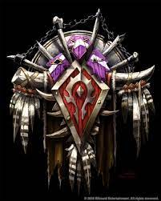

Jaskinia WoW - serwis fanowski |
|||||||||||||||||||||||||||||||||||||||||||||||||||||||||||
|
Strona Główna Przymierze Horda Ankieta |
Horda„W Hordzie akcja i siła są cenione ponad dyplomację, a jej przywódcy zdobywają szacunek ostrza, nie tracąc czasu na politykę. Brutalność bohaterów Hordy jest skoncentrowana, dając głos tym, którzy walczą o przetrwanie!”―Opis Hordy  Horda (inaczej Nowa Horda lub Horda Thralla) jest jedną z dwóch głównych frakcji skupiających rasy śmiertelne świata Azeroth i główny oponent Przymierza. Frakcja ta zrzesza rozmaite rasy, głównie wyrzutków jacy przez podejrzliwe czy wrogie nawet wobec nich nastawienie świata zdecydowali się połączyć i stworzyć własne domy, jak również walczyć o nie. Pokonała ona przez całą historię liczne przeszkody, które ją ukształtowały, walcząc jako rodzina, towarzysze broni, czy nawet niełatwi sojusznicy. W przeszłości jej poprzednik nosił miano Starej Hordy, Orczej Hordy oraz Hordy Orków, Trolli i Taurenów. Stolicą Hordy jest orkowe miasto Orgrimmar, zaś na czele jej stoi Wódz Wojenny, wybierany przez innego Wodza lub przez zgromadzenie, rządzący niepodzielnie i kierujący wszystkimi sprawami wewnętrznymi i zewnętrznymi, jak również będący głównodowodzącym wszystkich sił Hordy. Frakcja ta powstała tuż po zakończeniu Trzeciej Wojny. Początkowo zrzeszała orków oraz trolle z plemienia Mrocznej Włóczni, później dołączyła do nich kolejna rasa, znana jako taureni. Kiedy Trzecia Wojna się skończyła Horda założyła ostatecznie swoje frakcje i miasta. Orkowie stworzyli Durotar, taureni Thunder Bluff, a trolle osiadły na Wyspach Echa. Prócz tego do Hordy dołączyli też Opuszczeni - wyzwoleni nieumarli z Lordaeronu - których stolicą stały się ruiny Miasta Stołecznego teraz znane jako Undercity. Klasy dostępne dla ras Hordy
Aby dowiedzieć się o kombinajach ras i klas w najnowszym dodatku Kliknij tutaj | ||||||||||||||||||||||||||||||||||||||||||||||||||||||||||
Jaskinia WoW - serwis fanowski |
|||||||||||||||||||||||||||||||||||||||||||||||||||||||||||